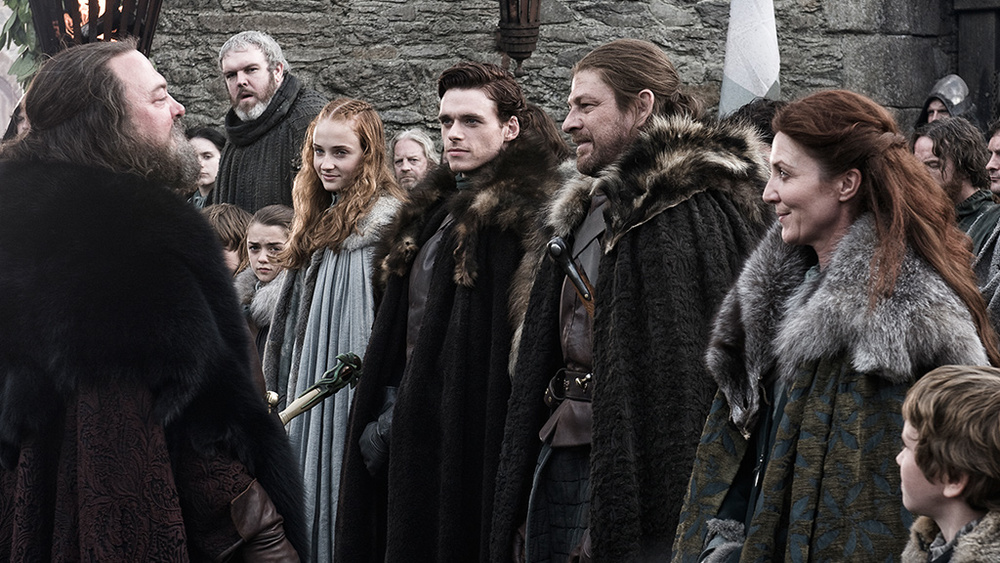
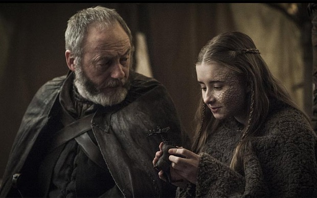

Winter Is Coming
Episode 1 "Winter Is Coming" King Robert Baratheon and his Queen, Cersei Lannister,
travel north to make his old friend Eddard
"Ned" Stark, Lord of Winterfell, the offer to be the new Hand of the King after the previous one, Jon Arryn
died under mysterious circumstances.

The Wars To Come
The fifth season of the fantasy drama television
series Game of Thrones premiered on HBO on April 12,
and concluded on June 14, 2015.
Dragonstone
Here's everything that went down in “The Dragon and the
Wolf”… Seven episodes into Season 7, and it's still a
novelty to see most of the Game of Thrones cast together
in one place after
so many seasons of them scattered across Westeros